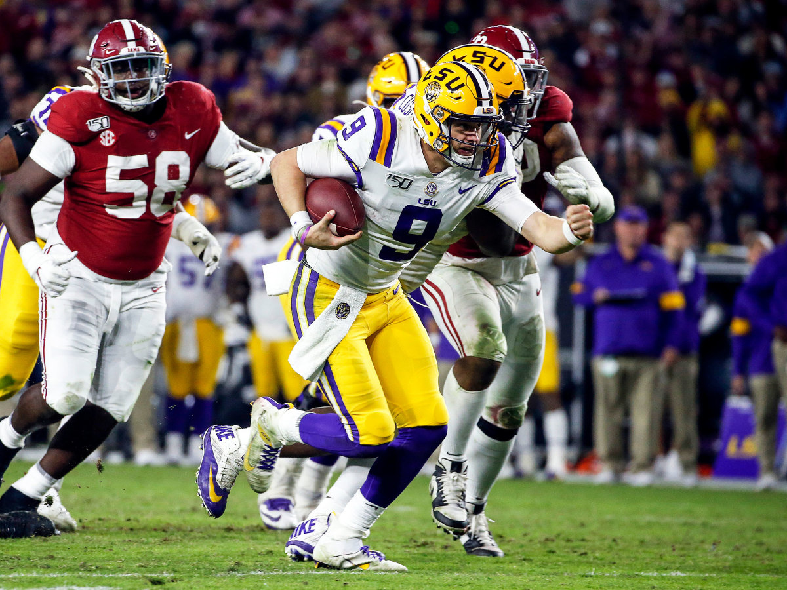

Colten Cowell
Colten Cowell
5/23/2020
Top Five Schools With The Most Picks in 2020 NFL Draft
The 2020 NFL Draft is in the books and several players saw their names called during this special
3 day event. Players were filled with emotion when they hear their phone ring and hear a voice on the other end of the line says
"We would like you to be a part of our organization." More importantly not only are the players happy to be selected, but their
respective universitys and college coaches are just as excited. Hearing more and more players being drafted from a particular school can
do wonders for a team's image, recruiting, and reputation. Last but not least it also gives rival schools bragging rights about who
put more players into the NFL.
You can find the list of top schools that had the most number of players drafted in this year's draft and see if your favorite school
made the cut.
- (6) Auburn Tigers & Notre Dame Fighting Irish
- (7) Clemson Tigers, Florida Gators, Georgia Bulldogs & Utah Utes
- (9) Alabama Crimson Tide
- (10) Michigan Wolverines & Ohio State Buckeyes
- (14) LSU Tigers 
Auburn Tigers: 6 picks
DT Derrick Brown
(7) - Carolina Panthers
CB Noah Igbinoghene
(30) - Miami Dolphins
DT Marlon Davidson
(47) - Atlanta Falcons
OG Jack Driscoll
(145) - Philadelphia Eagles
S Daniel Thomas
(157) - Jacksonville Jaguars
OT Prince Tega Wanogho
(210) - Philadelphia Eagles

Notre Dame Fighting Irish: 6 picks
TE Cole Kmet
(43) - Chicago Bears
WR Chase Claypool
(49) - Pittsburgh Steelers
OLB Julian Okwara
(67) - Detroit Lions
CB Troy Pride Jr.
(113) - Carolina Panthers
DE Khalid Kareem
(147) - Cincinnati Bengals
S Alohi Gilman
(186) - Los Angeles Chargers

Clemson Tigers: 7 picks
OLB Isaiah Simmons
(8) - Arizona Cardinals
CB A.J. Terrell
(16) - Atlanta Falcons
WR Tee Higgins
(33) - Cincinnati Bengals
S Tanner Muse
(100) - Las Vegas Raiders
OG John Simpson
(109) - Las Vegas Raiders
S K'Von Wallace
(127) - Philadelphia Eagles
OG Tremayne Anchrum
(250) - Los Angeles Rams
Florida Gators: 7 picks
CB C.J. Henderson
(9) - Jacksonville Jaguars
WR Van Jefferson
(57) - Los Angeles Rams
DE Jabari Zuniga
(79) - New York Jets
OLB Jonathan Greenard
(90) - Houston Texans
RB La'Mical Perine
(120) - New York Jets
WR Freddie Swain
(214) - Seattle Seahawks
WR Tyrie Cleveland
(252) - Denver Broncos

Georgia Bulldogs: 7 picks
OT Andrew Thomas
(4) - New York Giants
OT Isaiah Wilson
(29) - Tennessee Titans
RB D'Andre Swift
(35) - Detroit Lions
OG Solomon Kindley
(111) - Miami Dolphins
QB Jake Fromm
(167) - Buffalo Bills
TE Charlie Woerner
(190) - San Francisco 49ers
ILB Tae Crowder
(255) - New York Giants
Utah Utes: 7 picks
CB Jaylon Johnson
(50) - Chicago Bears
S Julian Blackmon
(85) - Indianapolis Colts
RB Zack Moss
(86) - Buffalo Bills
S Terrell Burgess
(104) - Los Angeles Rams
DT Leki Fotu
(114) - Arizona Cardinals
DE Bradlee Anae
(179) - Dallas Cowboys
DT John Penisini
(197) - Detroit Lions

Alabama Crimson Tide: 9 picks
QB Tua Tagovailoa
(5) - Miami Dolphins
OT Jedrick Wills Jr.
(10) - Cleveland Browns
WR Henry Ruggs III
(12) - Las Vegas Raiders
WR Jerry Jeudy
(15) - Denver Broncos
S Xavier McKinney
(36) - New York Giants
CB Trevon Diggs
(51) - Dallas Cowboys
DT Raekwon Davis
(56) - Miami Dolphins
OLB Terrell Lewis
(84) - Los Angeles Rams
OLB Anfernee Jennings
(87) - New England Patriots
Michigan Wolverines: 10 picks
C Cesar Ruiz
(24) - New Orleans Saints
OLB Josh Uche
(60) - New England Patriots
OG Ben Bredeson
(143) - Baltimore Ravens
OLB Khaleke Hudson
(163) - Washington Redskins
DE Mike Danna
(178) - Kansas City Chiefs
OG Michael Onwenu
(182) - New England Patriots
WR Donovan Peoples-Jones
(187) - Cleveland Browns
OG Jon Runyan Jr.
(192) - Green Bay Packers
S Josh Metellus
(205) - Minnesota Vikings
ILB Jordan Glasgow
(213) - Indianapolis Colts
Ohio State Buckeyes: 10 picks
DE Chase Young
(2) - Washington Redskins
CB Jeff Okudah
(3) - Detroit Lions
CB Damon Arnette
(19) - Las Vegas Raiders
RB J.K. Dobbins
(55) - Baltimore Ravens
DT Davon Hamilton
(73) - Jacksonville Jaguars
OG Jonah Jackson
(75) - Detroit Lions
ILB Malik Harrison
(98) - Baltimore Ravens
S Jordan Fuller
(199) - Los Angeles Rams
WR K.J. Hill
(220) - Los Angeles Chargers
DE Jashon Cornell
(235) - Detroit Lions